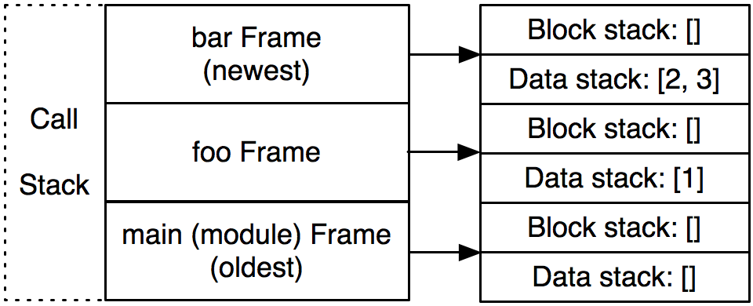

A Python Interpreter Written in Python
by Allison Kaptur
Allison is an engineer at Dropbox, where she helps maintain one of the largest networks of Python clients in the world. Before Dropbox, she was a facilitator at the Recurse Center, a writers retreat for programmers in New York. She’s spoken at PyCon North America about Python internals and loves weird bugs. She blogs at akaptur.com.
(This chapter is also available in Simplified Chinese).
Introduction
Byterun is a Python interpreter implemented in Python. Through my work on Byterun, I was surprised and delighted to discover that the fundamental structure of the Python interpreter fits easily into the 500-line size restriction. This chapter will walk through the structure of the interpreter and give you enough context to explore it further. The goal is not to explain everything there is to know about interpreters—like so many interesting areas of programming and computer science, you could devote years to developing a deep understanding of the topic.
Byterun was written by Ned Batchelder and myself, building on the work of Paul Swartz. Its structure is similar to the primary implementation of Python, CPython, so understanding Byterun will help you understand interpreters in general and the CPython interpreter in particular. (If you don’t know which Python you’re using, it’s probably CPython.) Despite its short length, Byterun is capable of running most simple Python programs1.
A Python Interpreter
Before we begin, let’s narrow down what we mean by “a Python interpreter”. The word “interpreter” can be used in a variety of different ways when discussing Python. Sometimes interpreter refers to the Python REPL, the interactive prompt you get by typing python at the command line. Sometimes people use “the Python interpreter” more or less interchangeably with “Python” to talk about executing Python code from start to finish. In this chapter, “interpreter” has a more narrow meaning: it’s the last step in the process of executing a Python program.
Before the interpreter takes over, Python performs three other steps: lexing, parsing, and compiling. Together, these steps transform the programmer’s source code from lines of text into structured code objects containing instructions that the interpreter can understand. The interpreter’s job is to take these code objects and follow the instructions.
You may be surprised to hear that compiling is a step in executing Python code at all. Python is often called an “interpreted” language like Ruby or Perl, as opposed to a “compiled” language like C or Rust. However, this terminology isn’t as precise as it may seem. Most interpreted languages, including Python, do involve a compilation step. The reason Python is called “interpreted” is that the compilation step does relatively less work (and the interpreter does relatively more) than in a compiled language. As we’ll see later in the chapter, the Python compiler has much less information about the behavior of a program than a C compiler does.
A Python Python Interpreter
Byterun is a Python interpreter written in Python. This may strike you as odd, but it’s no more odd than writing a C compiler in C. (Indeed, the widely used C compiler gcc is written in C.) You could write a Python interpreter in almost any language.
Writing a Python interpreter in Python has both advantages and disadvantages. The biggest disadvantage is speed: executing code via Byterun is much slower than executing it in CPython, where the interpreter is written in C and carefully optimized. However, Byterun was designed originally as a learning exercise, so speed is not important to us. The biggest advantage to using Python is that we can more easily implement just the interpreter, and not the rest of the Python run-time, particularly the object system. For example, Byterun can fall back to “real” Python when it needs to create a class. Another advantage is that Byterun is easy to understand, partly because it’s written in a high-level language (Python!) that many people find easy to read. (We also exclude interpreter optimizations in Byterun—once again favoring clarity and simplicity over speed.)
Building an Interpreter
Before we start to look at the code of Byterun, we need some higher-level context on the structure of the interpreter. How does the Python interpreter work?
The Python interpreter is a virtual machine, meaning that it is software that emulates a physical computer. This particular virtual machine is a stack machine: it manipulates several stacks to perform its operations (as contrasted with a register machine, which writes to and reads from particular memory locations).
The Python interpreter is a bytecode interpreter: its input is instruction sets called bytecode. When you write Python, the lexer, parser, and compiler generate code objects for the interpreter to operate on. Each code object contains a set of instructions to be executed—that’s the bytecode—plus other information that the interpreter will need. Bytecode is an intermediate representation of Python code: it expresses the source code that you wrote in a way the interpreter can understand. It’s analogous to the way that assembly language serves as an intermediate representation between C code and a piece of hardware.
A Tiny Interpreter
To make this concrete, let’s start with a very minimal interpreter. This interpreter can only add numbers, and it understands just three instructions. All code it can execute consists of these three instructions in different combinations. The three instructions are these:
LOAD_VALUEADD_TWO_VALUESPRINT_ANSWER
Since we’re not concerned with the lexer, parser, and compiler in this chapter, it doesn’t matter how the instruction sets are produced. You can imagine writing 7 + 5 and having a compiler emit a combination of these three instructions. Or, if you have the right compiler, you can write Lisp syntax that’s turned into the same combination of instructions. The interpreter doesn’t care. All that matters is that our interpreter is given a well-formed arrangement of the instructions.
Suppose that
7 + 5
produces this instruction set:
what_to_execute = {
"instructions": [("LOAD_VALUE", 0), # the first number
("LOAD_VALUE", 1), # the second number
("ADD_TWO_VALUES", None),
("PRINT_ANSWER", None)],
"numbers": [7, 5] }
The Python interpreter is a stack machine, so it must manipulate stacks to add two numbers (Figure: A stack machine.) The interpreter will begin by executing the first instruction, LOAD_VALUE, and pushing the first number onto the stack. Next it will push the second number onto the stack. For the third instruction, ADD_TWO_VALUES, it will pop both numbers off, add them together, and push the result onto the stack. Finally, it will pop the answer back off the stack and print it.
The LOAD_VALUE instruction tells the interpreter to push a number on to the stack, but the instruction alone doesn’t specify which number. Each instruction needs an extra piece of information, telling the interpreter where to find the number to load. So our instruction set has two pieces: the instructions themselves, plus a list of constants the instructions will need. (In Python, what we’re calling “instructions” is the bytecode, and the “what to execute” object below is the code object.)
Why not just put the numbers directly in the instructions? Imagine if we were adding strings together instead of numbers. We wouldn’t want to have the strings stuffed in with the instructions, since they could be arbitrarily large. This design also means we can have just one copy of each object that we need, so for example to add 7 + 7, "numbers" could be just [7].
You may be wondering why instructions other than ADD_TWO_VALUES were needed at all. Indeed, for the simple case of adding two numbers, the example is a little contrived. However, this instruction is a building block for more complex programs. For example, with just the instructions we’ve defined so far, we can already add together three values—or any number of values—given the right set of these instructions. The stack provides a clean way to keep track of the state of the interpreter, and it will support more complexity as we go along.
Now let’s start to write the interpreter itself. The interpreter object has a stack, which we’ll represent with a list. The object also has a method describing how to execute each instruction. For example, for LOAD_VALUE, the interpreter will push the value onto the stack.
class Interpreter:
def __init__(self):
self.stack = []
def LOAD_VALUE(self, number):
self.stack.append(number)
def PRINT_ANSWER(self):
answer = self.stack.pop()
print(answer)
def ADD_TWO_VALUES(self):
first_num = self.stack.pop()
second_num = self.stack.pop()
total = first_num + second_num
self.stack.append(total)
These three functions implement the three instructions our interpreter understands. The interpreter needs one more piece: a way to tie everything together and actually execute it. This method, run_code, takes the what_to_execute dictionary defined above as an argument. It loops over each instruction, processes the arguments to that instruction if there are any, and then calls the corresponding method on the interpreter object.
def run_code(self, what_to_execute):
instructions = what_to_execute["instructions"]
numbers = what_to_execute["numbers"]
for each_step in instructions:
instruction, argument = each_step
if instruction == "LOAD_VALUE":
number = numbers[argument]
self.LOAD_VALUE(number)
elif instruction == "ADD_TWO_VALUES":
self.ADD_TWO_VALUES()
elif instruction == "PRINT_ANSWER":
self.PRINT_ANSWER()
To test it out, we can create an instance of the object and then call the run_code method with the instruction set for adding 7 + 5 defined above.
interpreter = Interpreter()
interpreter.run_code(what_to_execute)
Sure enough, it prints the answer: 12.
Although this interpreter is quite limited, this process is almost exactly how the real Python interpreter adds numbers. There are a couple of things to note even in this small example.
First of all, some instructions need arguments. In real Python bytecode, about half of instructions have arguments. The arguments are packed in with the instructions, much like in our example. Notice that the arguments to the instructions are different than the arguments to the methods that are called.
Second, notice that the instruction for ADD_TWO_VALUES did not require any arguments. Instead, the values to be added together were popped off the interpreter’s stack. This is the defining feature of a stack-based interpreter.
Remember that given valid instruction sets, without any changes to our interpreter, we can add more than two numbers at a time. Consider the instruction set below. What do you expect to happen? If you had a friendly compiler, what code could you write to generate this instruction set?
what_to_execute = {
"instructions": [("LOAD_VALUE", 0),
("LOAD_VALUE", 1),
("ADD_TWO_VALUES", None),
("LOAD_VALUE", 2),
("ADD_TWO_VALUES", None),
("PRINT_ANSWER", None)],
"numbers": [7, 5, 8] }
At this point, we can begin to see how this structure is extensible: we can add methods on the interpreter object that describe many more operations (as long as we have a compiler to hand us well-formed instruction sets).
Variables
Next let’s add variables to our interpreter. Variables require an instruction for storing the value of a variable, STORE_NAME; an instruction for retrieving it, LOAD_NAME; and a mapping from variable names to values. For now, we’ll ignore namespaces and scoping, so we can store the variable mapping on the interpreter object itself. Finally, we’ll have to make sure that what_to_execute has a list of the variable names, in addition to its list of constants.
>>> def s():
... a = 1
... b = 2
... print(a + b)
# a friendly compiler transforms `s` into:
what_to_execute = {
"instructions": [("LOAD_VALUE", 0),
("STORE_NAME", 0),
("LOAD_VALUE", 1),
("STORE_NAME", 1),
("LOAD_NAME", 0),
("LOAD_NAME", 1),
("ADD_TWO_VALUES", None),
("PRINT_ANSWER", None)],
"numbers": [1, 2],
"names": ["a", "b"] }
Our new implementation is below. To keep track of what names are bound to what values, we’ll add an environment dictionary to the __init__ method. We’ll also add STORE_NAME and LOAD_NAME. These methods first look up the variable name in question and then use the dictionary to store or retrieve its value.
The arguments to an instruction can now mean two different things: They can either be an index into the “numbers” list, or they can be an index into the “names” list. The interpreter knows which it should be by checking what instruction it’s executing. We’ll break out this logic—and the mapping of instructions to what their arguments mean—into a separate method.
class Interpreter:
def __init__(self):
self.stack = []
self.environment = {}
def STORE_NAME(self, name):
val = self.stack.pop()
self.environment[name] = val
def LOAD_NAME(self, name):
val = self.environment[name]
self.stack.append(val)
def parse_argument(self, instruction, argument, what_to_execute):
""" Understand what the argument to each instruction means."""
numbers = ["LOAD_VALUE"]
names = ["LOAD_NAME", "STORE_NAME"]
if instruction in numbers:
argument = what_to_execute["numbers"][argument]
elif instruction in names:
argument = what_to_execute["names"][argument]
return argument
def run_code(self, what_to_execute):
instructions = what_to_execute["instructions"]
for each_step in instructions:
instruction, argument = each_step
argument = self.parse_argument(instruction, argument, what_to_execute)
if instruction == "LOAD_VALUE":
self.LOAD_VALUE(argument)
elif instruction == "ADD_TWO_VALUES":
self.ADD_TWO_VALUES()
elif instruction == "PRINT_ANSWER":
self.PRINT_ANSWER()
elif instruction == "STORE_NAME":
self.STORE_NAME(argument)
elif instruction == "LOAD_NAME":
self.LOAD_NAME(argument)
Even with just five instructions, the run_code method is starting to get tedious. If we kept this structure, we’d need one branch of the if statement for each instruction. Here, we can make use of Python’s dynamic method lookup. We’ll always define a method called FOO to execute the instruction called FOO, so we can use Python’s getattr function to look up the method on the fly instead of using the big if statement. The run_code method then looks like this:
def execute(self, what_to_execute):
instructions = what_to_execute["instructions"]
for each_step in instructions:
instruction, argument = each_step
argument = self.parse_argument(instruction, argument, what_to_execute)
bytecode_method = getattr(self, instruction)
if argument is None:
bytecode_method()
else:
bytecode_method(argument)
Real Python Bytecode
At this point, we’ll abandon our toy instruction sets and switch to real Python bytecode. The structure of bytecode is similar to our toy interpreter’s verbose instruction sets, except that it uses one byte instead of a long name to identify each instruction. To understand this structure, we’ll walk through the bytecode of a short function. Consider the example below:
>>> def cond():
... x = 3
... if x < 5:
... return 'yes'
... else:
... return 'no'
...
Python exposes a boatload of its internals at run time, and we can access them right from the REPL. For the function object cond, cond.__code__ is the code object associated it, and cond.__code__.co_code is the bytecode. There’s almost never a good reason to use these attributes directly when you’re writing Python code, but they do allow us to get up to all sorts of mischief—and to look at the internals in order to understand them.
>>> cond.__code__.co_code # the bytecode as raw bytes
b'd\x01\x00}\x00\x00|\x00\x00d\x02\x00k\x00\x00r\x16\x00d\x03\x00Sd\x04\x00Sd\x00
\x00S'
>>> list(cond.__code__.co_code) # the bytecode as numbers
[100, 1, 0, 125, 0, 0, 124, 0, 0, 100, 2, 0, 107, 0, 0, 114, 22, 0, 100, 3, 0, 83,
100, 4, 0, 83, 100, 0, 0, 83]
When we just print the bytecode, it looks unintelligible—all we can tell is that it’s a series of bytes. Luckily, there’s a powerful tool we can use to understand it: the dis module in the Python standard library.
dis is a bytecode disassembler. A disassembler takes low-level code that is written for machines, like assembly code or bytecode, and prints it in a human-readable way. When we run dis.dis, it outputs an explanation of the bytecode it has passed.
>>> dis.dis(cond)
2 0 LOAD_CONST 1 (3)
3 STORE_FAST 0 (x)
3 6 LOAD_FAST 0 (x)
9 LOAD_CONST 2 (5)
12 COMPARE_OP 0 (<)
15 POP_JUMP_IF_FALSE 22
4 18 LOAD_CONST 3 ('yes')
21 RETURN_VALUE
6 >> 22 LOAD_CONST 4 ('no')
25 RETURN_VALUE
26 LOAD_CONST 0 (None)
29 RETURN_VALUE
What does all this mean? Let’s look at the first instruction LOAD_CONST as an example. The number in the first column (2) shows the line number in our Python source code. The second column is an index into the bytecode, telling us that the LOAD_CONST instruction appears at position zero. The third column is the instruction itself, mapped to its human-readable name. The fourth column, when present, is the argument to that instruction. The fifth column, when present, is a hint about what the argument means.
Consider the first few bytes of this bytecode: [100, 1, 0, 125, 0, 0]. These six bytes represent two instructions with their arguments. We can use dis.opname, a mapping from bytes to intelligible strings, to find out what instructions 100 and 125 map to:
>>> dis.opname[100]
'LOAD_CONST'
>>> dis.opname[125]
'STORE_FAST'
The second and third bytes—1, 0—are arguments to LOAD_CONST, while the fifth and sixth bytes—0, 0—are arguments to STORE_FAST. Just like in our toy example, LOAD_CONST needs to know where to find its constant to load, and STORE_FAST needs to find the name to store. (Python’s LOAD_CONST is the same as our toy interpreter’s LOAD_VALUE, and LOAD_FAST is the same as LOAD_NAME.) So these six bytes represent the first line of code, x = 3. (Why use two bytes for each argument? If Python used just one byte to locate constants and names instead of two, you could only have 256 names/constants associated with a single code object. Using two bytes, you can have up to 256 squared, or 65,536.)
Conditionals and Loops
So far, the interpreter has executed code simply by stepping through the instructions one by one. This is a problem; often, we want to execute certain instructions many times, or skip them under certain conditions. To allow us to write loops and if statements in our code, the interpreter must be able to jump around in the instruction set. In a sense, Python handles loops and conditionals with GOTO statements in the bytecode! Look at the disassembly of the function cond again:
>>> dis.dis(cond)
2 0 LOAD_CONST 1 (3)
3 STORE_FAST 0 (x)
3 6 LOAD_FAST 0 (x)
9 LOAD_CONST 2 (5)
12 COMPARE_OP 0 (<)
15 POP_JUMP_IF_FALSE 22
4 18 LOAD_CONST 3 ('yes')
21 RETURN_VALUE
6 >> 22 LOAD_CONST 4 ('no')
25 RETURN_VALUE
26 LOAD_CONST 0 (None)
29 RETURN_VALUE
The conditional if x < 5 on line 3 of the code is compiled into four instructions: LOAD_FAST, LOAD_CONST, COMPARE_OP, and POP_JUMP_IF_FALSE. x < 5 generates code to load x, load 5, and compare the two values. The instruction POP_JUMP_IF_FALSE is responsible for implementing the if. This instruction will pop the top value off the interpreter’s stack. If the value is true, then nothing happens. (The value can be “truthy”—it doesn’t have to be the literal True object.) If the value is false, then the interpreter will jump to another instruction.
The instruction to land on is called the jump target, and it’s provided as the argument to the POP_JUMP instruction. Here, the jump target is 22. The instruction at index 22 is LOAD_CONST on line 6. (dis marks jump targets with >>.) If the result of x < 5 is False, then the interpreter will jump straight to line 6 (return "no"), skipping line 4 (return "yes"). Thus, the interpreter uses jump instructions to selectively skip over parts of the instruction set.
Python loops also rely on jumping. In the bytecode below, notice that the line while x < 5 generates almost identical bytecode to if x < 10. In both cases, the comparison is calculated and then POP_JUMP_IF_FALSE controls which instruction is executed next. At the end of line 4—the end of the loop’s body—the instruction JUMP_ABSOLUTE always sends the interpreter back to instruction 9 at the top of the loop. When x < 5 becomes false, then POP_JUMP_IF_FALSE jumps the interpreter past the end of the loop, to instruction 34.
>>> def loop():
... x = 1
... while x < 5:
... x = x + 1
... return x
...
>>> dis.dis(loop)
2 0 LOAD_CONST 1 (1)
3 STORE_FAST 0 (x)
3 6 SETUP_LOOP 26 (to 35)
>> 9 LOAD_FAST 0 (x)
12 LOAD_CONST 2 (5)
15 COMPARE_OP 0 (<)
18 POP_JUMP_IF_FALSE 34
4 21 LOAD_FAST 0 (x)
24 LOAD_CONST 1 (1)
27 BINARY_ADD
28 STORE_FAST 0 (x)
31 JUMP_ABSOLUTE 9
>> 34 POP_BLOCK
5 >> 35 LOAD_FAST 0 (x)
38 RETURN_VALUE
Explore Bytecode
I encourage you to try running dis.dis on functions you write. Some questions to explore:
- What’s the difference between a for loop and a while loop to the Python interpreter?
- How can you write different functions that generate identical bytecode?
- How does
elifwork? What about list comprehensions?
Frames
So far, we’ve learned that the Python virtual machine is a stack machine. It steps and jumps through instructions, pushing and popping values on and off a stack. There are still some gaps in our mental model, though. In the examples above, the last instruction is RETURN_VALUE, which corresponds to the return statement in the code. But where does the instruction return to?
To answer this question, we must add a layer of complexity: the frame. A frame is a collection of information and context for a chunk of code. Frames are created and destroyed on the fly as your Python code executes. There’s one frame corresponding to each call of a function—so while each frame has one code object associated with it, a code object can have many frames. If you had a function that called itself recursively ten times, you’d have eleven frames—one for each level of recursion and one for the module you started from. In general, there’s a frame for each scope in a Python program. For example, each module, each function call, and each class definition has a frame.
Frames live on the call stack, a completely different stack from the one we’ve been discussing so far. (The call stack is the stack you’re most familiar with already—you’ve seen it printed out in the tracebacks of exceptions. Each line in a traceback starting with “File ‘program.py’, line 10” corresponds to one frame on the call stack.) The stack we’ve been examining—the one the interpreter is manipulating while it executes bytecode—we’ll call the data stack. There’s also a third stack, called the block stack. Blocks are used for certain kinds of control flow, particularly looping and exception handling. Each frame on the call stack has its own data stack and block stack.
Let’s make this concrete with an example. Suppose the Python interpreter is currently executing the line marked 3 below. The interpreter is in the middle of a call to foo, which is in turn calling bar. The diagram shows a schematic of the call stack of frames, the block stacks, and the data stacks. (This code is written like a REPL session, so we’ve first defined the needed functions.) At the moment we’re interested in, the interpreter is executing foo(), at the bottom, which then reaches in to the body of foo and then up into bar.
>>> def bar(y):
... z = y + 3 # <--- (3) ... and the interpreter is here.
... return z
...
>>> def foo():
... a = 1
... b = 2
... return a + bar(b) # <--- (2) ... which is returning a call to bar ...
...
>>> foo() # <--- (1) We're in the middle of a call to foo ...
3

At this point, the interpreter is in the middle of the function call tobar. There are three frames on the call stack: one for the module level, one for the function foo, and one for bar (Figure: The call stack.) Once bar returns, the frame associated with it is popped off the call stack and discarded.
The bytecode instruction RETURN_VALUE tells the interpreter to pass a value between frames. First it will pop the top value off the data stack of the top frame on the call stack. Then it pops the entire frame off the call stack and throws it away. Finally, the value is pushed onto the data stack on the next frame down.
When Ned Batchelder and I were working on Byterun, for a long time we had a significant error in our implementation. Instead of having one data stack on each frame, we had just one data stack on the entire virtual machine. We had dozens of tests made up of little snippets of Python code which we ran through Byterun and through the real Python interpreter to make sure the same thing happened in both interpreters. Nearly all of these tests were passing. The only thing we couldn’t get working was generators. Finally, reading the CPython code more carefully, we realized the mistake2. Moving a data stack onto each frame fixed the problem.
Looking back on this bug, I was amazed at how little of Python relied on each frame having a different data stack. Nearly all operations in the Python interpreter carefully clean up the data stack, so the fact that the frames were sharing the same stack didn’t matter. In the example above, when bar finishes executing, it’ll leave its data stack empty. Even if foo shared the same stack, the values would be lower down. However, with generators, a key feature is the ability to pause a frame, return to some other frame, and then return to the generator frame later and have it be in exactly the same state that you left it.
Byterun
We now have enough context about the Python interpreter to begin examining Byterun.
There are four kinds of objects in Byterun:
- A
VirtualMachineclass, which manages the highest-level structure, particularly the call stack of frames, and contains a mapping of instructions to operations. This is a more complex version of theIntepreterobject above. - A
Frameclass. EveryFrameinstance has one code object and manages a few other necessary bits of state, particularly the global and local namespaces, a reference to the calling frame, and the last bytecode instruction executed. - A
Functionclass, which will be used in place of real Python functions. Recall that calling a function creates a new frame in the interpreter. We implement Function so that we control the creation of new Frames. - A
Blockclass, which just wraps the three attributes of blocks. (The details of blocks aren’t central to the Python interpreter, so we won’t spend much time on them, but they’re included here so that Byterun can run real Python code.)
The VirtualMachine Class
Only one instance of VirtualMachine will be created each time the program is run, because we only have one Python interpreter. VirtualMachine stores the call stack, the exception state, and return values while they’re being passed between frames. The entry point for executing code is the method run_code, which takes a compiled code object as an argument. It starts by setting up and running a frame. This frame may create other frames; the call stack will grow and shrink as the program executes. When the first frame eventually returns, execution is finished.
class VirtualMachineError(Exception):
pass
class VirtualMachine(object):
def __init__(self):
self.frames = [] # The call stack of frames.
self.frame = None # The current frame.
self.return_value = None
self.last_exception = None
def run_code(self, code, global_names=None, local_names=None):
""" An entry point to execute code using the virtual machine."""
frame = self.make_frame(code, global_names=global_names,
local_names=local_names)
self.run_frame(frame)
The Frame Class
Next we’ll write the Frame object. The frame is a collection of attributes with no methods. As mentioned above, the attributes include the code object created by the compiler; the local, global, and builtin namespaces; a reference to the previous frame; a data stack; a block stack; and the last instruction executed. (We have to do a little extra work to get to the builtin namespace because Python treats this namespace differently in different modules; this detail is not important to the virtual machine.)
class Frame(object):
def __init__(self, code_obj, global_names, local_names, prev_frame):
self.code_obj = code_obj
self.global_names = global_names
self.local_names = local_names
self.prev_frame = prev_frame
self.stack = []
if prev_frame:
self.builtin_names = prev_frame.builtin_names
else:
self.builtin_names = local_names['__builtins__']
if hasattr(self.builtin_names, '__dict__'):
self.builtin_names = self.builtin_names.__dict__
self.last_instruction = 0
self.block_stack = []
Next, we’ll add frame manipulation to the virtual machine. There are three helper functions for frames: one to create new frames (which is responsible for sorting out the namespaces for the new frame) and one each to push and pop frames on and off the frame stack. A fourth function, run_frame, does the main work of executing a frame. We’ll come back to this soon.
class VirtualMachine(object):
[... snip ...]
# Frame manipulation
def make_frame(self, code, callargs={}, global_names=None, local_names=None):
if global_names is not None and local_names is not None:
local_names = global_names
elif self.frames:
global_names = self.frame.global_names
local_names = {}
else:
global_names = local_names = {
'__builtins__': __builtins__,
'__name__': '__main__',
'__doc__': None,
'__package__': None,
}
local_names.update(callargs)
frame = Frame(code, global_names, local_names, self.frame)
return frame
def push_frame(self, frame):
self.frames.append(frame)
self.frame = frame
def pop_frame(self):
self.frames.pop()
if self.frames:
self.frame = self.frames[-1]
else:
self.frame = None
def run_frame(self):
pass
# we'll come back to this shortly
The Function Class
The implementation of the Function object is somewhat twisty, and most of the details aren’t critical to understanding the interpreter. The important thing to notice is that calling a function—invoking the __call__ method—creates a new Frame object and starts running it.
class Function(object):
"""
Create a realistic function object, defining the things the interpreter expects.
"""
__slots__ = [
'func_code', 'func_name', 'func_defaults', 'func_globals',
'func_locals', 'func_dict', 'func_closure',
'__name__', '__dict__', '__doc__',
'_vm', '_func',
]
def __init__(self, name, code, globs, defaults, closure, vm):
"""You don't need to follow this closely to understand the interpreter."""
self._vm = vm
self.func_code = code
self.func_name = self.__name__ = name or code.co_name
self.func_defaults = tuple(defaults)
self.func_globals = globs
self.func_locals = self._vm.frame.f_locals
self.__dict__ = {}
self.func_closure = closure
self.__doc__ = code.co_consts[0] if code.co_consts else None
# Sometimes, we need a real Python function. This is for that.
kw = {
'argdefs': self.func_defaults,
}
if closure:
kw['closure'] = tuple(make_cell(0) for _ in closure)
self._func = types.FunctionType(code, globs, **kw)
def __call__(self, *args, **kwargs):
"""When calling a Function, make a new frame and run it."""
callargs = inspect.getcallargs(self._func, *args, **kwargs)
# Use callargs to provide a mapping of arguments: values to pass into the new
# frame.
frame = self._vm.make_frame(
self.func_code, callargs, self.func_globals, {}
)
return self._vm.run_frame(frame)
def make_cell(value):
"""Create a real Python closure and grab a cell."""
# Thanks to Alex Gaynor for help with this bit of twistiness.
fn = (lambda x: lambda: x)(value)
return fn.__closure__[0]
Next, back on the VirtualMachine object, we’ll add some helper methods for data stack manipulation. The bytecodes that manipulate the stack always operate on the current frame’s data stack. This will make our implementations of POP_TOP, LOAD_FAST, and all the other instructions that touch the stack more readable.
class VirtualMachine(object):
[... snip ...]
# Data stack manipulation
def top(self):
return self.frame.stack[-1]
def pop(self):
return self.frame.stack.pop()
def push(self, *vals):
self.frame.stack.extend(vals)
def popn(self, n):
"""Pop a number of values from the value stack.
A list of `n` values is returned, the deepest value first.
"""
if n:
ret = self.frame.stack[-n:]
self.frame.stack[-n:] = []
return ret
else:
return []
Before we get to running a frame, we need two more methods.
The first, parse_byte_and_args, takes a bytecode, checks if it has arguments, and parses the arguments if so. This method also updates the frame’s attribute last_instruction, a reference to the last instruction executed. A single instruction is one byte long if it doesn’t have an argument, and three bytes if it does have an argument; the last two bytes are the argument. The meaning of the argument to each instruction depends on which instruction it is. For example, as mentioned above, for POP_JUMP_IF_FALSE, the argument to the instruction is the jump target. For BUILD_LIST, it is the number of elements in the list. For LOAD_CONST, it’s an index into the list of constants.
Some instructions use simple numbers as their arguments. For others, the virtual machine has to do a little work to discover what the arguments mean. The dis module in the standard library exposes a cheatsheet explaining what arguments have what meaning, which makes our code more compact. For example, the list dis.hasname tells us that the arguments to LOAD_NAME, IMPORT_NAME, LOAD_GLOBAL, and nine other instructions have the same meaning: for these instructions, the argument represents an index into the list of names on the code object.
class VirtualMachine(object):
[... snip ...]
def parse_byte_and_args(self):
f = self.frame
opoffset = f.last_instruction
byteCode = f.code_obj.co_code[opoffset]
f.last_instruction += 1
byte_name = dis.opname[byteCode]
if byteCode >= dis.HAVE_ARGUMENT:
# index into the bytecode
arg = f.code_obj.co_code[f.last_instruction:f.last_instruction+2]
f.last_instruction += 2 # advance the instruction pointer
arg_val = arg[0] + (arg[1] * 256)
if byteCode in dis.hasconst: # Look up a constant
arg = f.code_obj.co_consts[arg_val]
elif byteCode in dis.hasname: # Look up a name
arg = f.code_obj.co_names[arg_val]
elif byteCode in dis.haslocal: # Look up a local name
arg = f.code_obj.co_varnames[arg_val]
elif byteCode in dis.hasjrel: # Calculate a relative jump
arg = f.last_instruction + arg_val
else:
arg = arg_val
argument = [arg]
else:
argument = []
return byte_name, argument
The next method is dispatch, which looks up the operations for a given instruction and executes them. In the CPython interpreter, this dispatch is done with a giant switch statement that spans 1,500 lines! Luckily, since we’re writing Python, we can be more compact. We’ll define a method for each byte name and then use getattr to look it up. Like in the toy interpreter above, if our instruction is named FOO_BAR, the corresponding method would be named byte_FOO_BAR. For the moment, we’ll leave the content of these methods as a black box. Each bytecode method will return either None or a string, called why, which is an extra piece of state the interpreter needs in some cases. These return values of the individual instruction methods are used only as internal indicators of interpreter state—don’t confuse these with return values from executing frames.
class VirtualMachine(object):
[... snip ...]
def dispatch(self, byte_name, argument):
""" Dispatch by bytename to the corresponding methods.
Exceptions are caught and set on the virtual machine."""
# When later unwinding the block stack,
# we need to keep track of why we are doing it.
why = None
try:
bytecode_fn = getattr(self, 'byte_%s' % byte_name, None)
if bytecode_fn is None:
if byte_name.startswith('UNARY_'):
self.unaryOperator(byte_name[6:])
elif byte_name.startswith('BINARY_'):
self.binaryOperator(byte_name[7:])
else:
raise VirtualMachineError(
"unsupported bytecode type: %s" % byte_name
)
else:
why = bytecode_fn(*argument)
except:
# deal with exceptions encountered while executing the op.
self.last_exception = sys.exc_info()[:2] + (None,)
why = 'exception'
return why
def run_frame(self, frame):
"""Run a frame until it returns (somehow).
Exceptions are raised, the return value is returned.
"""
self.push_frame(frame)
while True:
byte_name, arguments = self.parse_byte_and_args()
why = self.dispatch(byte_name, arguments)
# Deal with any block management we need to do
while why and frame.block_stack:
why = self.manage_block_stack(why)
if why:
break
self.pop_frame()
if why == 'exception':
exc, val, tb = self.last_exception
e = exc(val)
e.__traceback__ = tb
raise e
return self.return_value
The Block Class
Before we implement the methods for each bytecode instruction, we’ll briefly discuss blocks. A block is used for certain kinds of flow control, specifically exception handling and looping. The block is reponsible for making sure that the data stack is in the appropriate state when the operation is finished. For example, in a loop, a special iterator object remains on the stack while the loop is running, but is popped off when it is finished. The interpreter must keep track of whether the loop is continuing or is finished.
To keep track of this extra piece of information, the interpreter sets a flag to indicate its state. We implement this flag as a variable called why, which can be None or one of the strings "continue", "break", "exception", or "return". This indicates what kind of manipulation of the block stack and data stack should happen. To return to the iterator example, if the top of the block stack is a loop block and the why code is continue, the iterator object should remain on the data stack, but if the why code is break, it should be popped off.
The precise details of block manipulation are rather fiddly, and we won’t spend more time on this, but interested readers are encouraged to take a careful look.
Block = collections.namedtuple("Block", "type, handler, stack_height")
class VirtualMachine(object):
[... snip ...]
# Block stack manipulation
def push_block(self, b_type, handler=None):
stack_height = len(self.frame.stack)
self.frame.block_stack.append(Block(b_type, handler, stack_height))
def pop_block(self):
return self.frame.block_stack.pop()
def unwind_block(self, block):
"""Unwind the values on the data stack corresponding to a given block."""
if block.type == 'except-handler':
# The exception itself is on the stack as type, value, and traceback.
offset = 3
else:
offset = 0
while len(self.frame.stack) > block.level + offset:
self.pop()
if block.type == 'except-handler':
traceback, value, exctype = self.popn(3)
self.last_exception = exctype, value, traceback
def manage_block_stack(self, why):
""" """
frame = self.frame
block = frame.block_stack[-1]
if block.type == 'loop' and why == 'continue':
self.jump(self.return_value)
why = None
return why
self.pop_block()
self.unwind_block(block)
if block.type == 'loop' and why == 'break':
why = None
self.jump(block.handler)
return why
if (block.type in ['setup-except', 'finally'] and why == 'exception'):
self.push_block('except-handler')
exctype, value, tb = self.last_exception
self.push(tb, value, exctype)
self.push(tb, value, exctype) # yes, twice
why = None
self.jump(block.handler)
return why
elif block.type == 'finally':
if why in ('return', 'continue'):
self.push(self.return_value)
self.push(why)
why = None
self.jump(block.handler)
return why
return why
The Instructions
All that’s left is to implement the dozens of methods for instructions. The actual instructions are the least interesting part of the interpreter, so we show only a handful here, but the full implementation is available on GitHub. (Enough instructions are included here to execute all the code samples that we disassembled above.)
class VirtualMachine(object):
[... snip ...]
## Stack manipulation
def byte_LOAD_CONST(self, const):
self.push(const)
def byte_POP_TOP(self):
self.pop()
## Names
def byte_LOAD_NAME(self, name):
frame = self.frame
if name in frame.f_locals:
val = frame.f_locals[name]
elif name in frame.f_globals:
val = frame.f_globals[name]
elif name in frame.f_builtins:
val = frame.f_builtins[name]
else:
raise NameError("name '%s' is not defined" % name)
self.push(val)
def byte_STORE_NAME(self, name):
self.frame.f_locals[name] = self.pop()
def byte_LOAD_FAST(self, name):
if name in self.frame.f_locals:
val = self.frame.f_locals[name]
else:
raise UnboundLocalError(
"local variable '%s' referenced before assignment" % name
)
self.push(val)
def byte_STORE_FAST(self, name):
self.frame.f_locals[name] = self.pop()
def byte_LOAD_GLOBAL(self, name):
f = self.frame
if name in f.f_globals:
val = f.f_globals[name]
elif name in f.f_builtins:
val = f.f_builtins[name]
else:
raise NameError("global name '%s' is not defined" % name)
self.push(val)
## Operators
BINARY_OPERATORS = {
'POWER': pow,
'MULTIPLY': operator.mul,
'FLOOR_DIVIDE': operator.floordiv,
'TRUE_DIVIDE': operator.truediv,
'MODULO': operator.mod,
'ADD': operator.add,
'SUBTRACT': operator.sub,
'SUBSCR': operator.getitem,
'LSHIFT': operator.lshift,
'RSHIFT': operator.rshift,
'AND': operator.and_,
'XOR': operator.xor,
'OR': operator.or_,
}
def binaryOperator(self, op):
x, y = self.popn(2)
self.push(self.BINARY_OPERATORS[op](x, y))
COMPARE_OPERATORS = [
operator.lt,
operator.le,
operator.eq,
operator.ne,
operator.gt,
operator.ge,
lambda x, y: x in y,
lambda x, y: x not in y,
lambda x, y: x is y,
lambda x, y: x is not y,
lambda x, y: issubclass(x, Exception) and issubclass(x, y),
]
def byte_COMPARE_OP(self, opnum):
x, y = self.popn(2)
self.push(self.COMPARE_OPERATORS[opnum](x, y))
## Attributes and indexing
def byte_LOAD_ATTR(self, attr):
obj = self.pop()
val = getattr(obj, attr)
self.push(val)
def byte_STORE_ATTR(self, name):
val, obj = self.popn(2)
setattr(obj, name, val)
## Building
def byte_BUILD_LIST(self, count):
elts = self.popn(count)
self.push(elts)
def byte_BUILD_MAP(self, size):
self.push({})
def byte_STORE_MAP(self):
the_map, val, key = self.popn(3)
the_map[key] = val
self.push(the_map)
def byte_LIST_APPEND(self, count):
val = self.pop()
the_list = self.frame.stack[-count] # peek
the_list.append(val)
## Jumps
def byte_JUMP_FORWARD(self, jump):
self.jump(jump)
def byte_JUMP_ABSOLUTE(self, jump):
self.jump(jump)
def byte_POP_JUMP_IF_TRUE(self, jump):
val = self.pop()
if val:
self.jump(jump)
def byte_POP_JUMP_IF_FALSE(self, jump):
val = self.pop()
if not val:
self.jump(jump)
## Blocks
def byte_SETUP_LOOP(self, dest):
self.push_block('loop', dest)
def byte_GET_ITER(self):
self.push(iter(self.pop()))
def byte_FOR_ITER(self, jump):
iterobj = self.top()
try:
v = next(iterobj)
self.push(v)
except StopIteration:
self.pop()
self.jump(jump)
def byte_BREAK_LOOP(self):
return 'break'
def byte_POP_BLOCK(self):
self.pop_block()
## Functions
def byte_MAKE_FUNCTION(self, argc):
name = self.pop()
code = self.pop()
defaults = self.popn(argc)
globs = self.frame.f_globals
fn = Function(name, code, globs, defaults, None, self)
self.push(fn)
def byte_CALL_FUNCTION(self, arg):
lenKw, lenPos = divmod(arg, 256) # KWargs not supported here
posargs = self.popn(lenPos)
func = self.pop()
frame = self.frame
retval = func(*posargs)
self.push(retval)
def byte_RETURN_VALUE(self):
self.return_value = self.pop()
return "return"
Dynamic Typing: What the Compiler Doesn’t Know
One thing you’ve probably heard is that Python is a “dynamic” language—particularly that it’s “dynamically typed”. The work we’ve done to this point sheds some light on this description.
One of the things “dynamic” means in this context is that a lot of work is done at run time. We saw earlier that the Python compiler doesn’t have much information about what the code actually does. For example, consider the short function mod below. mod takes two arguments and returns the first modulo the second. In the bytecode, we see that the variables a and b are loaded, then the bytecode BINARY_MODULO performs the modulo operation itself.
>>> def mod(a, b):
... return a % b
>>> dis.dis(mod)
2 0 LOAD_FAST 0 (a)
3 LOAD_FAST 1 (b)
6 BINARY_MODULO
7 RETURN_VALUE
>>> mod(19, 5)
4
Calculating 19 % 5 yields 4—no surprise there. What happens if we call it with different arguments?
>>> mod("by%sde", "teco")
'bytecode'
What just happened? You’ve probably seen this syntax before, but in a different context:
>>> print("by%sde" % "teco")
bytecode
Using the symbol % to format a string for printing means invoking the instruction BINARY_MODULO. This instruction mods together the top two values on the stack when the instruction executes—regardless of whether they’re strings, integers, or instances of a class you defined yourself. The bytecode was generated when the function was compiled (effectively, when it was defined) and the same bytecode is used with different types of arguments.
The Python compiler knows relatively little about the effect the bytecode will have. It’s up to the interpreter to determine the type of the object that BINARY_MODULO is operating on and do the right thing for that type. This is why Python is described as dynamically typed: you don’t know the types of the arguments to this function until you actually run it. By contrast, in a language that’s statically typed, the programmer tells the compiler up front what type the arguments will be (or the compiler figures them out for itself).
The compiler’s ignorance is one of the challenges to optimizing Python or analyzing it statically—just looking at the bytecode, without actually running the code, you don’t know what each instruction will do! In fact, you could define a class that implements the __mod__ method, and Python would invoke that method if you use % on your objects. So BINARY_MODULO could run any code at all!
Just looking at the following code, the first calculation of a % b seems wasteful.
def mod(a,b):
a % b
return a %b
Unfortunately, a static analysis of this code—the kind of you can do without running it—can’t be certain that the first a % b really does nothing. Calling __mod__ with % might write to a file, or interact with another part of your program, or do literally anything else that’s possible in Python. It’s hard to optimize a function when you don’t know what it does! In Russell Power and Alex Rubinsteyn’s great paper “How fast can we make interpreted Python?”, they note, “In the general absence of type information, each instruction must be treated as INVOKE_ARBITRARY_METHOD.”
Conclusion
Byterun is a compact Python interpreter that’s easier to understand than CPython. Byterun replicates CPython’s primary structural details: a stack-based interpreter operating on instruction sets called bytecode. It steps or jumps through these instructions, pushing to and popping from a stack of data. The interpreter creates, destroys, and jumps between frames as it calls into and returns from functions and generators. Byterun shares the real interpreter’s limitations, too: because Python uses dynamic typing, the interpreter must work hard at run time to determine the correct behavior of a program.
I encourage you to disassemble your own programs and to run them using Byterun. You’ll quickly run into instructions that this shorter version of Byterun doesn’t implement. The full implementation can be found at https://github.com/nedbat/byterun—or, by carefully reading the real CPython interpreter’s ceval.c, you can implement it yourself!
Acknowledgements
Thanks to Ned Batchelder for originating this project and guiding my contributions, Michael Arntzenius for his help debugging the code and editing the prose, Leta Montopoli for her edits, and the entire Recurse Center community for their support and interest. Any errors are my own.